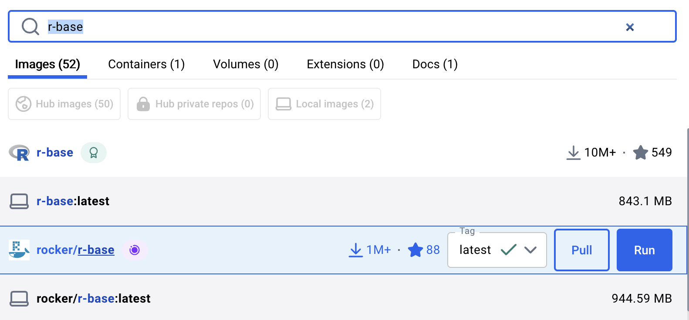
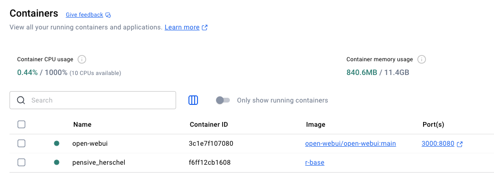

ETC5513: Reproducible and Collaborative Practices
Docker: portable computational environments
Lecturer: Michael Lydeamore
Department of Econometrics and Business Statistics
Open Frame

Recap
- Repositories give a project a shared home
- Quarto makes the report reproducible
renvrecords the R package environmenttargetsrecords the workflow and reruns only what is needed
Today we move one layer lower: the computer environment itself.
Today’s plan
Aim
- Explain what Docker adds to reproducible research
- Distinguish images, containers, registries, mounts, and volumes
- Run an R container using the Rocker images
- Write a small
Dockerfilefor an R project - Use bind mounts and Docker Compose for a development environment
- Decide when Docker is worth using
A note on assessment
Tip
Docker is included to show you the current gold standard for portable computational environments.
You should understand the ideas and recognise the workflow.
You are not expected to memorise every Docker command for assessment.
Why Docker?
The familiar problem
But on someone else’s machine:
- R is a different version
- A package was compiled differently
- A system library is missing
- The operating system behaves differently
- The project path is different
Reproducibility is not only about code.
Layers of reproducibility
| Layer | Tool we have used | What it records |
|---|---|---|
| Code history | git |
What changed, when, and why |
| Documents | Quarto | Text, code, and outputs together |
| R packages | renv |
Package versions for the project |
| Workflow | targets |
What depends on what |
| Computer environment | Docker | Operating system, system libraries, and commands |
Docker does not replace the earlier tools. It wraps them in a portable environment.
What Docker gives us
Docker lets us describe and run a small computer environment.
That environment can include:
- An operating system
- R and system libraries
- R packages
- Project files
- A default command to run
The description is plain text, so it can be committed to git.
What Docker is not
Docker is not:
- A substitute for readable code
- A substitute for tests or checks
- A place to hide manual steps
- A magic fix for missing data
- Always worth the extra complexity
Tip
Use Docker when the environment itself is part of the reproducibility problem.
A useful mental model
An image is like a saved template. A container is a running instance of that template.
Docker vocabulary
| Term | Meaning |
|---|---|
Dockerfile |
A text file with instructions to build an image |
| Image | A reusable template for a container |
| Container | A running environment created from an image |
| Registry | A place to publish and download images |
| Mount | A way to connect host files to a container |
| Volume | Storage managed by Docker |
Containers and virtual machines
Containers are like virtual machines, but lighter.
| Virtual machine | Container |
|---|---|
| Simulates a whole computer | Shares the host system kernel |
| Usually larger | Usually smaller |
| Slower to start | Faster to start |
| Stronger isolation | Enough isolation for many data workflows |
For reproducible R projects, containers are usually the more practical option.
Host and container
The container is isolated, but it can still connect to:
- Files you mount from the host
- Ports you expose to the host
- The internet, if available
Running Containers
Install Docker Desktop
Docker Desktop gives us:
- The Docker engine
- A visual interface
- Image and container management
- Logs and resource information
Download: https://www.docker.com/products/docker-desktop
After installation, open Docker Desktop before running Docker commands.
Check that Docker is working
In the terminal:
If Docker is working, hello-world downloads a tiny image and runs it.
This is the smallest possible “does my Docker setup work?” check.
R images from Rocker
The Rocker project provides Docker images for R.
Common examples include:
r-base: a minimal R imagerocker/r-ver: versioned R imagesrocker/rstudio: RStudio Server in a browserrocker/verse: RStudio plus many common data science tools
Rocker saves us from writing a full Linux and R installation from scratch.
Search and pull in Docker Desktop

Docker Desktop can search for images and download them.
For teaching, the terminal is still clearer because the command documents exactly what happened.
Run a basic R container
This starts R inside a container.
The prompt looks familiar, but R is running inside the container, not directly on your computer.
Command flags
runcreates and starts a container-tgives the container a terminal-ikeeps input open--rmremoves the container after it stopsr-baseis the image name
Use q() to exit the R session.
Is the container running?

You can also check in the terminal:
For stopped containers:
Containers are disposable by default
Start a container:
Install a package by hand inside it.
Exit the container.
Start the container again.
The package is gone. That is a feature, not a bug.
Why disposable is good
Disposable containers make it harder to accidentally depend on:
- Packages installed by hand
- Objects left in memory
- Files saved in an unknown place
- Local configuration on one person’s computer
Tip
If you need something every time, put it in the image or mount it from the host.
Images And Dockerfiles
A Dockerfile is a recipe
A Dockerfile describes how to build an image.
This says: start from the r-base image.
Every image builds on another image, unless it starts from scratch.
Add packages
RUN executes a command while the image is being built.
After the image is built, these packages are part of the image.
Add a default command
CMD says what should happen when a container starts.
Here the default behaviour is to open R.
Build the image
In the folder containing the Dockerfile:
Then run it:
The . at the end of docker build means “use this folder as the build context”.
Image tags
Tags are labels for images.
Avoid relying on latest when you need long-term reproducibility.
Pin the base image
Less reproducible:
More reproducible:
The second version says exactly which R version family the image starts from.
Project Dockerfile pattern
For an R project using renv:
FROM rocker/r-ver:4.4.3
WORKDIR /project
ENV RENV_PATHS_LIBRARY=/opt/renv/library
ENV RENV_PATHS_CACHE=/opt/renv/cache
ARG QUARTO_VERSION=1.8.27
RUN apt-get update \
&& apt-get install -y --no-install-recommends curl ca-certificates \
&& arch="$(dpkg --print-architecture)" \
&& curl -L -o quarto.deb \
"https://github.com/quarto-dev/quarto-cli/releases/download/v${QUARTO_VERSION}/quarto-${QUARTO_VERSION}-linux-${arch}.deb" \
&& apt-get install -y ./quarto.deb \
&& quarto --version \
&& rm quarto.deb \
&& rm -rf /var/lib/apt/lists/*
RUN Rscript -e "install.packages('renv')"
COPY .Rprofile .Rprofile
COPY renv.lock renv.lock
COPY renv/activate.R renv/activate.R
COPY renv/settings.json renv/settings.json
RUN Rscript -e "renv::restore(prompt = FALSE)"
COPY . .
CMD ["Rscript", "-e", "renv::load('/project'); targets::tar_make()"]renv::restore() installs packages into /opt/renv/library. renv::load() makes sure that library is used when the container starts.
Putting the library outside /project matters because a bind mount can replace /project at runtime.
The Quarto CLI is installed separately because the R package quarto does not provide the quarto command.
Why copy renv.lock first?
Docker builds in layers.
If the package lockfile has not changed, Docker can reuse the package installation layer.
This makes rebuilds much faster when only your analysis code changes.
The .dockerignore file
The build context should not include everything.
This keeps images smaller and avoids copying local machine state into the container.
Copying project files
A containerised analysis image might include:
Usually avoid copying:
A useful rule
Tip
Commit the recipe, not the leftovers.
In git, keep:
Dockerfile.dockerignorerenv.lock- Project source files
Do not commit the built image itself.
Getting Work In And Out
Three storage patterns
| Pattern | What happens | Good for |
|---|---|---|
| Container filesystem | Files live inside one container | Short experiments |
| Bind mount | Host folder appears inside container | Active development |
| Named volume | Docker manages persistent storage | Databases and service data |
For this unit, bind mounts are the most useful pattern.
Bind mount a project folder
This means:
- The current folder on your computer appears as
/project - The container starts in
/project - Changes are saved on your computer
Why bind mounts matter
Without a bind mount:
With a bind mount:
This is how we use Docker while still editing files normally.
RStudio Server in Docker
RStudio Server runs in the container and opens in your browser.
Then open:
What the flags mean
-druns the container in the background-p 8787:8787maps a browser port to the container-e PASSWORD=changemesets an environment variable--rmremoves the container when it stops
Use a stronger password for anything that is not just local teaching work.
Stop the container
List running containers:
Stop one:
You only need enough of the container ID to make it unique.
Named volumes
Create a Docker-managed volume:
Use it:
Volumes are useful when the data belongs to the service, not directly to your project folder.
Bind mounts versus volumes
| Feature | Bind mount | Named volume |
|---|---|---|
| Managed by | You | Docker |
| Easy to inspect in Finder or Explorer | Yes | Less directly |
| Portable across computers | Depends on path | Managed by Docker |
| Best for | Code and project files | Databases and service state |
Permissions
Bind mounts can expose permission differences between:
- macOS
- Windows
- Linux
- The user inside the container
Symptoms include:
- Files created by the container cannot be edited on the host
- R cannot write to a mounted project folder
- Package libraries are not writable
This is normal Docker friction. It is not a sign that the project is broken.
Docker Compose
The problem with long commands
This is useful, but hard to remember:
Docker Compose lets us write this configuration once.
A Compose file
compose.yaml
Run:
Stopping Compose services
Older examples may use docker-compose. The newer command is docker compose.
Multiple services
Some projects need more than R.
Why multiple services?
A data science project might use:
- RStudio Server for analysis
- PostgreSQL for a database
- A web app for results
- A separate service for an API
Compose describes the small system, not just one container.
Environment variables
Environment variables configure software without hard-coding values.
Common uses:
- Passwords for local services
- API endpoints
- R package repository settings
- Application configuration
Secrets warning
Warning
Do not commit real passwords, API keys, or tokens to a repository.
For real projects, use:
.envfiles that are not committed- GitHub Actions secrets
- A password manager
- Cloud secret stores
Docker In A Reproducible Workflow
How the pieces fit together
The strongest projects use these tools together, each doing a different job.
A containerised targets workflow
FROM rocker/r-ver:4.4.3
WORKDIR /project
ENV RENV_PATHS_LIBRARY=/opt/renv/library
ENV RENV_PATHS_CACHE=/opt/renv/cache
ARG QUARTO_VERSION=1.8.27
RUN apt-get update \
&& apt-get install -y --no-install-recommends curl ca-certificates \
&& arch="$(dpkg --print-architecture)" \
&& curl -L -o quarto.deb \
"https://github.com/quarto-dev/quarto-cli/releases/download/v${QUARTO_VERSION}/quarto-${QUARTO_VERSION}-linux-${arch}.deb" \
&& apt-get install -y ./quarto.deb \
&& quarto --version \
&& rm quarto.deb \
&& rm -rf /var/lib/apt/lists/*
RUN Rscript -e "install.packages('renv')"
COPY .Rprofile .Rprofile
COPY renv.lock renv.lock
COPY renv/activate.R renv/activate.R
COPY renv/settings.json renv/settings.json
RUN Rscript -e "renv::restore(prompt = FALSE)"
COPY . .
CMD ["Rscript", "-e", "renv::load('/project'); targets::tar_make()"]Then:
What this gives the collaborator
Instead of saying:
You can say:
That is a much smaller surface area for mistakes.
But Docker is not enough
A Docker image can still fail if:
- Required data are missing
- Private credentials are unavailable
- The analysis uses absolute paths
- The Dockerfile depends on changing remote resources
- Results depend on randomness without fixed seeds
- The instructions are not documented
Docker reduces environment drift. It does not remove the need for good project design.
When Docker is worth it
Use Docker when:
- Collaborators have different operating systems
- The project needs system libraries
- You need to deploy an analysis or app
- A journal, client, or supervisor needs a runnable environment
- You want automated checks to run in the same environment every time
When Docker may be too much
For a small class project, you may be fine with:
- A clear folder structure
- A Quarto report
renv.lock- A short README
- A
targetspipeline for larger analyses
Tip
Choose the simplest tool that makes the project trustworthy.
Sharing Images
Registries
A registry stores Docker images.
Common options:
- Docker Hub
- GitHub Container Registry
- A private registry inside an organisation
This is like GitHub for built environments, but the object being shared is an image.
Push an image
Login:
Build with a registry-ready name:
Push:
Pull and run
Someone else can run:
For long-term projects, also keep the Dockerfile in the repository so the image can be rebuilt.
Images can get large
Images include operating system files, libraries, R, packages, and maybe project files.
Ways to keep them manageable:
- Use
.dockerignore - Avoid copying large generated outputs
- Start from an appropriate base image
- Clean package manager caches when installing system libraries
- Rebuild only when needed
Cleaning up
Docker can accumulate:
- Stopped containers
- Old images
- Unused volumes
- Build cache
Inspect first:
Clean cautiously:
Warning
docker system prune deletes stopped containers and unused build objects. Read the prompt before confirming.
Worked Example
Containerise a small analysis
Imagine this project:
The goal:
should rebuild the analysis.
_targets.R
library(targets)
library(tarchetypes)
tar_source()
tar_option_set(
packages = c("palmerpenguins", "dplyr", "ggplot2")
)
list(
tar_target(raw_data, palmerpenguins::penguins),
tar_target(clean_data, clean_penguins(raw_data)),
tar_target(species_plot, plot_species(clean_data)),
tar_quarto(report, "report.qmd")
)Dockerfile
FROM rocker/r-ver:4.4.3
WORKDIR /project
ENV RENV_PATHS_LIBRARY=/opt/renv/library
ENV RENV_PATHS_CACHE=/opt/renv/cache
ARG QUARTO_VERSION=1.8.27
RUN apt-get update \
&& apt-get install -y --no-install-recommends curl ca-certificates \
&& arch="$(dpkg --print-architecture)" \
&& curl -L -o quarto.deb \
"https://github.com/quarto-dev/quarto-cli/releases/download/v${QUARTO_VERSION}/quarto-${QUARTO_VERSION}-linux-${arch}.deb" \
&& apt-get install -y ./quarto.deb \
&& quarto --version \
&& rm quarto.deb \
&& rm -rf /var/lib/apt/lists/*
RUN Rscript -e "install.packages('renv')"
COPY .Rprofile .Rprofile
COPY renv.lock renv.lock
COPY renv/activate.R renv/activate.R
COPY renv/settings.json renv/settings.json
RUN Rscript -e "renv::restore(prompt = FALSE)"
COPY . .
CMD ["Rscript", "-e", "renv::load('/project'); targets::tar_make()"]Build and run
If the report is written inside the container, remember:
Without a mount, the output stays inside the container and disappears when the container is removed.
Keep outputs on the host
Now rendered outputs are written to your project folder.
This is usually what you want while developing.
The package library still comes from the image because it is stored in /opt/renv/library, not under the mounted /project folder.
Practical Advice
Common mistakes
- Forgetting that containers are disposable
- Copying
_targets/into the image - Copying
renv/library/into the image - Restoring with
renvbut not activating the project library at runtime - Restoring packages into
/project/renv/libraryand then hiding them with a bind mount - Installing the R package
quartobut forgetting the Quarto CLI - Relying on
latesttags for long-term work - Installing packages interactively but not updating the Dockerfile or
renv.lock - Using absolute paths from the host machine
- Committing secrets inside
compose.yaml
A good Docker README section
Make the default path easy for a new person to follow.
Minimal project checklist
Before sharing a Dockerised project, check:
Dockerfilebuilds from a clean clone.dockerignoreexcludes local staterenv.lockis currenttargets::tar_make()runs inside the container- Outputs can be written somewhere useful
- README explains build and run commands
How to debug a container
Open a shell inside the image:
Then inspect:
Debug the environment first, then the analysis.
The main trade-off
Docker costs:
- More files
- More concepts
- Larger downloads
- More setup time
- Occasional permissions issues
Docker buys:
- Portable environments
- Fewer “works on my machine” problems
- Deployment readiness
- Stronger automated checks
- A clear computational record
Summary
- Docker describes and runs portable computational environments
- Images are templates; containers are running instances
Dockerfilerecords how an image is built- Bind mounts connect project files to containers
- Docker Compose records longer container configurations
- Docker complements
git, Quarto,renv, andtargets
Final thought
Tip
Reproducibility is a ladder. Docker is one of the higher rungs, not the first one.
Start with clear code, relative paths, version control, package management, and a runnable workflow.
Then use Docker when the environment needs to be part of the project.

ETC5513 Week 11